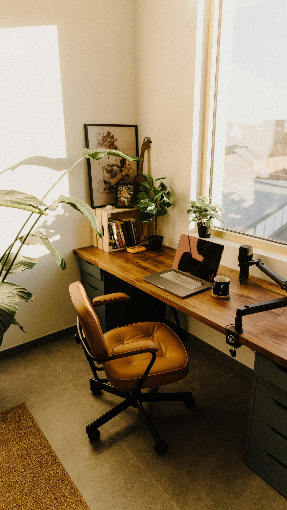
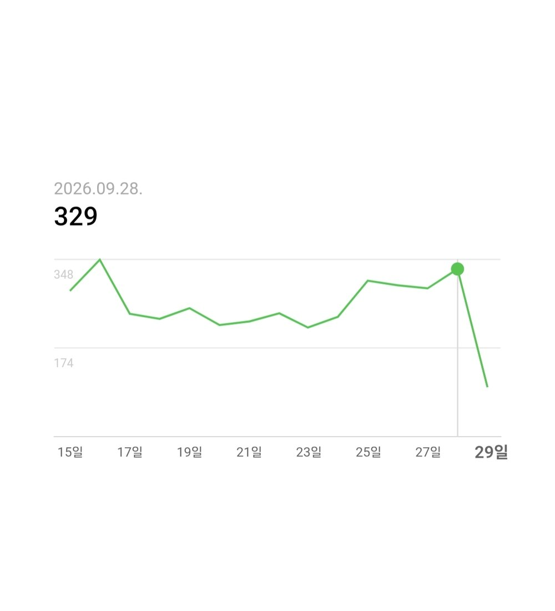
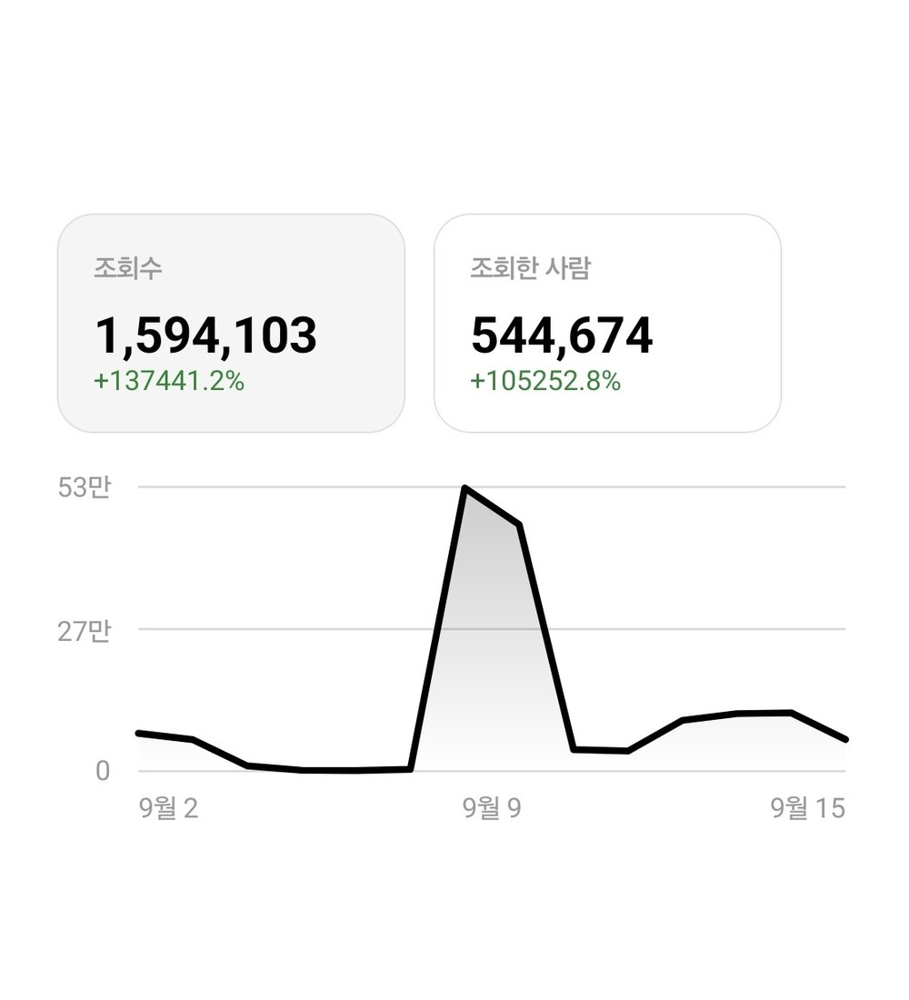
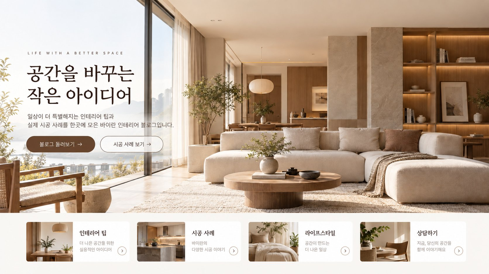

BYRAN MEDIA · DIGITAL MARKETING
좋은 가게가
더 많은 사람에게
발견되도록.
검색되는 블로그, 대화가 시작되는 스레드.
우리 가게다운 콘텐츠로 다음 손님을 만납니다.
꾸준히 쌓이는 콘텐츠.
오래 기억되는 브랜드.
Our Service
우리 가게에 맞는 채널을,
꾸준히 운영합니다.
콘텐츠 기획부터 첫 화면의 인상까지.
지금 필요한 서비스부터 시작하세요.

블로그 대행
손님이 검색하는 키워드로 글을 기획하고, 이미지까지 넣어 매달 정해진 횟수만큼 발행해요.

스레드 대행
가게 분위기에 맞는 말투로 월 20회 이상 글을 올려, 팔로워가 손님이 되는 계정을 만들어요.

샘플 시안홈페이지형 블로그 제작
블로그 첫 화면을 홈페이지처럼 꾸며 메뉴와 상담 버튼을 한눈에 보여줘요.
 샘플 시안
샘플 시안홈페이지 제작
업체 소개, 서비스 안내, 문의 동선을 담은 반응형 홈페이지를 만들어요.
운영 중인 블로그·스레드·홈페이지, 무엇이 막혀 있는지 먼저 봐드릴게요.
주소만 보내주시면 블로그·스레드는 글 주제와 발행 주기, 프로필을, 홈페이지는 첫 화면과 모바일 화면, 문의 동선을 살펴보고 개선할 점을 정리해 드려요. 진단은 무료예요.
About Byran
보이는 데서 끝나지 않고,
문의까지 이어지게.
조회수만 높은 계정은 매출로 이어지기 어려워요. 바이란 마케팅은 손님이 어떤 말로 검색하고 어떤 글에 반응하는지부터 봐요. 그다음 약속한 횟수만큼 꾸준히 올리고, 들어온 손님이 바로 문의할 수 있게 동선을 만들어요.
금액 안내 보기Price
금액은 처음부터
그대로 안내해요.
블로그 대행2가지 플랜
BASIC월 12회 발행 · 1,500자 이내 · 이미지 7장 이상
STANDARD월 20회 발행 · 2,000자 이내 · 이미지 10장 이상
스레드 대행기간 선택
1개월월 20회 이상 발행 · 1개월 운영
2개월월 20회 이상 발행 · 2개월 운영
홈페이지형 블로그 제작1회
블로그 대문 · 메뉴 카드 · 상담 버튼 · PC·모바일
홈페이지 제작1회
반응형 홈페이지 · 소개·서비스·문의 구성
무료 계정 진단FREE
블로그·스레드·홈페이지 점검과 개선 포인트 정리
블로그도 스레드도, 꾸준함이 답이에요.
정해진 권장 기간은 없어요. 몰아서 올리기보다 꾸준히 이어가는 게 중요해요. 손님이 가게를 검색으로 찾는 창구라 사업자라면 꼭 관리해야 해요.
블로그보다 반응이 빨리 와서 성과를 내기 수월한 편이에요. 계정이 자리를 잡으려면 3개월은 이어서 운영하시길 권해요.
Process
상담부터 운영까지,
네 단계로 진행해요.
처음이라면 무료 계정 진단부터 시작해 보세요.
무료 진단
지금 운영 중인 계정과 업종, 주변 경쟁 매장을 먼저 살펴봐요.
운영 기획
키워드, 말투, 발행 일정을 사장님과 함께 정해요.
발행·운영
약속한 횟수만큼 글을 쓰고 꾸준히 발행해요.
점검·조정
반응을 확인하고 다음 달 글 방향을 조정해요.
Portfolio
작업 사례
서비스별 사례는 각 안내 페이지와 포트폴리오 페이지에서 볼 수 있어요.